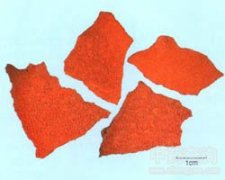

红粉

拼音
Hónɡ Fěn
别名
灵药、三白丹、三仙散、小升丹、三仙丹、升丹、红升、小红升、升药
来源
本品为红氧化汞（HgO）。
生境分布
主产于河北、天津、湖北武汉、湖南湘潭、江苏镇江；其他地区亦可制造。
药材特点
无特点数据
性状
本品为橙红色片状或粉状结晶，片状的一面光滑略具光泽，另一面较粗糙。粉末橙色。质硬，性脆；无臭；遇光颜色逐渐变深。
性味
辛，热；有大毒。
功能主治
拨毒，除脓，去腐，生肌。用于痈疽疔疮，梅毒下疳，一切恶疮，肉暗紫黑，腐肉不去，窦道瘘管，脓水淋漓，久不收口。
用法用量
外用适量，研极细粉单用或与其他药味配成散剂或制成药捻。
化学成分
主要含氧化汞(HgO)，另含硝酸汞[Hg(NO3)2]等。
药理作用
1：抗菌作用：红粉浓度6×l0(-5)在体外对常见化脓性细菌：如金黄色葡萄球菌、大肠杆菌有很强的杀菌作用，其杀菌效力比石炭酸大100倍以上
2：但由于红粉的配伍及炼制方法不完全相同：因此，在药物成分、杀菌力和疗效上也有差别
3：促进创口愈合：术后切口感染：创面用生理盐水棉球清拭干净，撒上一层薄薄的红粉，以灭菌敷料覆盖
4：待脓液减少：肉芽新生时，改用生理盐水纱条
5：与单纯使用利凡诺纱条的手术切口感染病例作比较：创口提前愈合，疗效有显着差异
6：体内过程：切掉大白鼠全层皮肤的2cm×2cm创面上撒布红粉干粉4小时后：血、脑、肝、肾等组织含汞量明显升高，内脏组织的含汞量随给药剂量增加而递增，以肾含汞量最多，其次为肝、血、脑
7：与对照组有显着性差异
8：毒性：红粉混悬液小鼠灌胃半数致死量为120.98±1.71mg/kg：属中等毒性药物
9：另有报告小鼠灌服氧化汞的半数致死量为22mg/kg：大鼠为18mg／kg
10：粗制氧化汞对人的致死量为1-1.5g：氧化汞人致死量为0.1-0.7g
摘录
《中国药典》